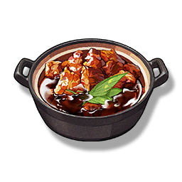

Lemon-Braised Pork
Supplies

Increases the defense of all Resonators in the team by 28% for 30 minutes, only effective for the player's Character in multiplayer games.
One of the famous field recipes of the Midnight Rangers, carefully selected Lemongrass and Raw Meat are combined for barbecue cooking. After being improved by people, the barbecue has been changed to stew, the aroma of Lemongrass can better mask the gamey taste of Raw Meat, making the dish widely spread.